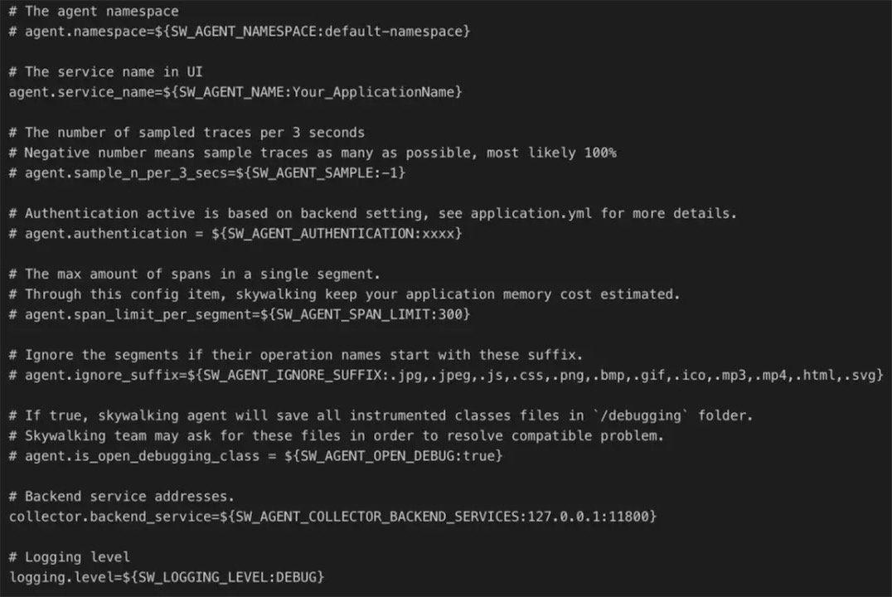
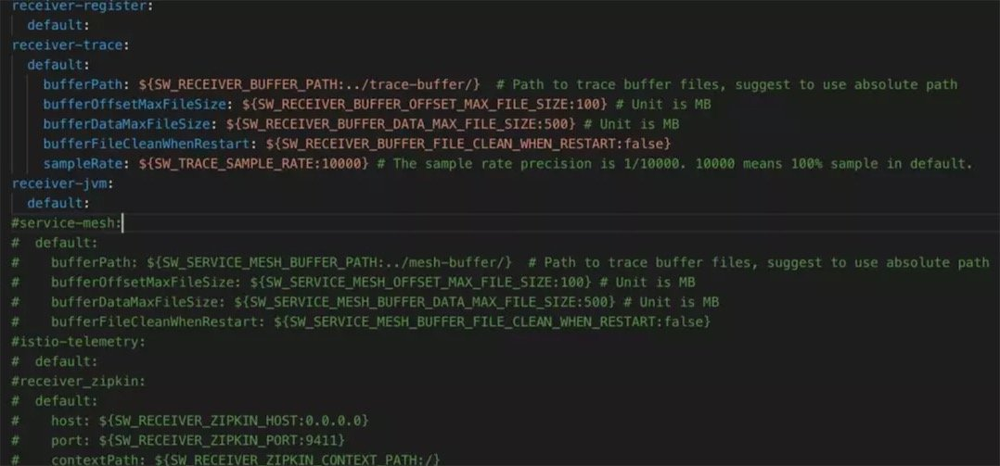
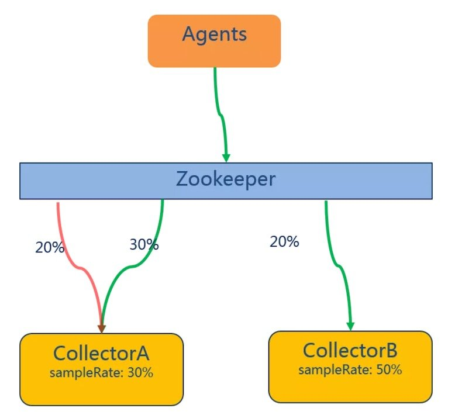

SkyWalking 微服务监控分析
- 作者：赵瑞栋
- 原文地址
引言
微服务框架落地后，分布式部署架构带来的问题就会迅速凸显出来。服务之间的相互调用过程中，如果业务出现错误或者异常，如何快速定位问题？如何跟踪业务调用链路？如何分析解决业务瓶颈？…本文我们来看看如何解决以上问题。
一、SkyWalking初探
Skywalking 简介
Skywalking是一款国内开源的应用性能监控工具，支持对分布式系统的监控、跟踪和诊断。
它提供了如下的主要功能特性：

Skywalking 技术架构

SW总体可以分为四部分：
1.Skywalking Agent：使用Javaagent做字节码植入，无侵入式的收集，并通过HTTP或者gRPC方式发送数据到Skywalking Collector。
- Skywalking Collector ：链路数据收集器，对agent传过来的数据进行整合分析处理并落入相关的数据存储中。
- Storage：Skywalking的存储，时间更迭，sw已经开发迭代到了6.x版本，在6.x版本中支持以ElasticSearch、Mysql、TiDB、H2、作为存储介质进行数据存储。
- UI ：Web可视化平台，用来展示落地的数据。
Skywalking Agent配置
通过了解配置，可以对一个组件功能有一个大致的了解。让我们一起看一下skywalking的相关配置。
解压开skywalking的压缩包，在agent/config文件夹中可以看到agent的配置文件。
从skywalking支持环境变量配置加载，在启动的时候优先读取环境变量中的相关配置。

- agent.namespace: 跨进程链路中的header，不同的namespace会导致跨进程的链路中断
- agent.service_name:一个服务（项目）的唯一标识，这个字段决定了在sw的UI上的关于service的展示名称
- agent.sample_n_per_3_secs: 客户端采样率，默认是-1代表全采样
- agent.authentication: 与collector进行通信的安全认证，需要同collector中配置相同
- agent.ignore_suffix: 忽略特定请求后缀的trace
- collecttor.backend_service: agent需要同collector进行数据传输的IP和端口
- logging.level: agent记录日志级别
skywalking agent使用javaagent无侵入式的配合collector实现对分布式系统的追踪和相关数据的上下文传递。
Skywalking Collector关键配置
Collector支持集群部署，zookeeper、kubernetes（如果你的应用是部署在容器中的）、consul（GO语言开发的服务发现工具）是sw可选的集群管理工具，结合大家具体的部署方式进行选择。详细配置大家可以去Skywalking官网下载介质包进行了解。
Collector端口设置

- downsampling: 采样汇总统计维度，会分别按照分钟、【小时、天、月】（可选）来统计各项指标数据。
- 通过设置TTL相关配置项可以对数据进行自动清理。
Skywalking 在6.X中简化了配置。collector提供了gRPC和HTTP两种通信方式。
UI使用rest http通信，agent在大多数场景下使用grpc方式通信，在语言不支持的情况下会使用http通信。
关于绑定IP和端口需要注意的一点是，通过绑定IP，agent和collector必须配置对应ip才可以正常通信。
Collector存储配置
在application.yml中配置的storage模块配置中选择要使用的数据库类型，并填写相关的配置信息。

Collector Receiver
Receiver是Skywalking在6.x提出的新的概念，负责从被监控的系统中接受指标数据。用户完全可以参照OpenTracing规范来上传自定义的监控数据。Skywalking官方提供了service-mesh、istio、zipkin的相关能力。

现在Skywalking支持服务端采样，配置项为sampleRate，比例采样，如果配置为5000则采样率就是50%。
关于采样设置的一点注意事项
关于服务采样配置的一点建议，如果Collector以集群方式部署，比如：Acollector和Bcollector，建议Acollector.sampleRate = Bcollector.sampleRate。如果采样率设置不相同可能会出现数据丢失问题。

假设Agent端将所有数据发送到后端Collector处，A采样率设置为30%，B采样率为50%。
假设有30%的数据，发送到A上，这些数据被全部正确接受并存储，极端情况（与期望的采样数据量相同）下，如果剩下20%待采样的数据发送到了B，这个时候一切都是正常的，如果这20%中有一部分数据被送到了A那么，这些数据将是被忽略的，由此就会造成数据丢失。
二、业务调用链路监控
Service Topology监控
调用链路监控可以从两个角度去看待。我们先从整体上来认识一下我们所监控的系统。
通过给服务添加探针并产生实际的调用之后，我们可以通过Skywalking的前端UI查看服务之间的调用关系。
我们简单模拟一次服务之间的调用。新建两个服务，service-provider以及service-consumer，服务之间简单的通过Feign Client 来模拟远程调用。

从图中可以看到:
- 有两个服务节点：provider & consumer
- 有一个数据库节点：localhost【mysql】
- 一个注册中心节点
consumer消费了provider提供出来的接口。
一个系统的拓扑图让我们清晰的认识到系统之间的应用的依赖关系以及当前状态下的业务流转流程。细心的可能发现图示节点consumer上有一部分是红色的，红色是什么意思呢？
红色代表当前流经consumer节点的请求有一断时间内是响应异常的。当节点全部变红的时候证明服务现阶段内就彻底不可用了。运维人员可以通过Topology迅速发现某一个服务潜在的问题，并进行下一步的排查并做到预防。
Skywalking Trace监控
Skywalking通过业务调用监控进行依赖分析，提供给我们了服务之间的服务调用拓扑关系、以及针对每个endpoint的trace记录。
我们在之前看到consumer节点服务中发生了错误，让我们一起来定位下错误是发生在了什么地方又是什么原因呢？

在每一条trace的信息中都可以看到当前请求的时间、GloableId、以及请求被调用的时间。我们分别看一看正确的调用和异常的调用。
Trace调用链路监控

图示展示的是一次正常的响应，这条响应总耗时19ms，它有4个span：
- span1 /getStore = 19ms 响应的总流转时间
- span2 /demo2/stores = 14ms feign client 开始调用远程服务后的响应的总时间
- span3 /stores = 14ms 接口服务响应总时间
- span4 Mysql = 1ms 服务提供端查询数据库的时间
这里span2和span3的时间表现相同，其实是不同的，因为这里时间取了整。
在每个Span中可以查看当前Span的相关属性。
- 组件类型: SpringMVC、Feign
- Span状态: false
- HttpMethod: GET
- Url: http://192.168.16.125:10002/demo2/stores

这是一次正常的请求调用Trace日志，可能我们并不关心正常的时候，毕竟一切正常不就是我们期待的么！
我们再来看下，异常状态下我们的Trace以及Span又是什么样的呢。

发生错误的调用链中Span中的is error标识变为true，并且在名为Logs的TAB中可以看到错误发生的具体原因。根据异常情况我们就可以轻松定位到影响业务的具体原因，从而快速定位问题，解决问题。
通过Log我们看到连接被拒，那么可能是我们的网络出现了问题（可能性小，因为实际情况如果网络出现问题我们连这个trace都看不到了），也有可能是服务端配置问题无法正确建立连接。通过异常日志，我们迅速就找到了问题的关键。
实际情况是，我把服务方停掉了，做了一次简单的模拟。可见，通过拓扑图示我们可以清晰的看到众多服务中哪个服务是出现了问题的，通过trace日志我们可以很快就定位到问题所在，在最短的时间内解决问题。
三、服务性能指标监控
Skywalking还可以查看具体Service的性能指标，根据相关的性能指标可以分析系统的瓶颈所在并提出优化方案。
Skywalking 性能监控
在服务调用拓扑图上点击相应的节点我们可以看到该服务的
- SLA: 服务可用性（主要是通过请求成功与失败次数来计算）
- CPM: 每分钟调用次数
- Avg Response Time: 平均响应时间

从应用整体外部来看我们可以监测到应用在一定时间段内的
- 服务可用性指标SLA
- 每分钟平均响应数
- 平均响应时间
- 服务进程PID
- 服务所在物理机的IP、HostName、Operation System
Service JVM信息监控

还可以监控到Service运行时的CPU、堆内存、非堆内存使用率、以及GC情况。这些信息来源于JVM。注意这里的数据可不是机器本身的数据。
四、服务告警
前文我们提到了通过查看拓扑图以及调用链路可以定位问题，可是运维人员又不可能一直盯着这些数据，那么我们就需要告警能力，在异常达到一定阈值的时候主动的提示我们去查看系统状态。
在Sywalking 6.x版本中新增了对服务状态的告警能力。它通过webhook的方式让我们可以自定义我们告警信息的通知方式。诸如:邮件通知、微信通知、短信通知等。
Skywalking 服务告警
先来看一下告警的规则配置。在alarm-settings.xml中可以配置告警规则，告警规则支持自定义。

一份告警配置由以下几部分组成：
- service_resp_time_rule：告警规则名称 ***_rule （规则名称可以自定义但是必须以’_rule’结尾
- indicator-name：指标数据名称： 定义参见http://t.cn/EGhfbmd
- op: 操作符： > , < , = 【当然你可以自己扩展开发其他的操作符】
- threshold：目标值：指标数据的目标数据 如sample中的1000就是服务响应时间，配合上操作符就是大于1000ms的服务响应
- period: 告警检查周期：多久检查一次当前的指标数据是否符合告警规则
- counts: 达到告警阈值的次数
- silence-period：忽略相同告警信息的周期
- message：告警信息
- webhooks：服务告警通知服务地址
Skywalking通过HttpClient的方式远程调用在配置项webhooks中定义的告警通知服务地址。

了解了SW所传送的数据格式我们就可以对告警信息进行接收处理，实现我们需要的告警通知服务啦！
我们将一个服务停掉，并将另外一个服务的某个对外暴露的接口让他休眠一定的时间。然后调用一定的次数观察服务的状态信息以及告警情况。

总结
本文简单的通过skwaylking的配置来对skywlaking的功能进行一次初步的了解，对skwaylking新提出的概念以及新功能进行简单的诠释，方便大家了解和使用。通过使用APM工具，可以让我们方便的查看微服务架构中系统瓶颈以及性能问题等。
精选提问
问1：想问问选型的时候用pinpoint还是SK好？
答：选型问题
- 要结合具体的业务场景， 比如你的代码运行环境 是java、php、net还是什么。
- pinpoint在安装部署上要比skywalking略微复杂
- pinpoint和sw支持的组件列表是不同的。 https://github.com/apache/incubator-skywalking/blob/master/docs/en/setup/service-agent/java-agent/Supported-list.md你可以参照这里的支持列表对比下pinpoint的支持对象做一个简单对比。
- sw经过测试在并发量较高的情况下比pinpoint的吞吐量更好一些。
问2：有没有指标统计，比如某个url 的top10 请求、响应最慢的10个请求？某个服务在整个链条中的耗时占比？
答：1.sw自带有响应最慢的请求top10统计针对所有的endpoint的统计。 2.针对每个url的top10统计，sw本身没有做统计，数据都是现成的通过简单的检索就可以搜到你想要的结果。 3.没有具体的耗时占比，但是有具体总链路时间统计以及某个服务的耗时统计，至于占比自己算吧，可以看ppt中的调用链路监控的span时间解释。
问3：能不能具体说一下在你们系统中的应用？
答：EOS8LA版本中，我们整合sw对应用提供拓扑、调用链路、性能指标的监控、并在sw数据的基础上增加系统的维度。 当服务数很庞大的时候，整体的拓扑其实就是一张密密麻麻的蜘蛛网。我们可以通过系统来选择具体某个系统下的应用。 8LA中SW是5.0.0alpha版本，受限于sw功能，我们并没有提供告警能力，这在之后会是我们的考虑目标。
问4：业务访问日志大概每天100G，kubernetes 环境中部署，使用稳定吗？
答：监控数据没有长时间的存储必要，除非你有特定的需求。它有一定的时效性，你可以设置ttl自动清除过时信息。100g，es集群还是能轻松支撑的。
问5：和pinpoint相比有什么优势吗？
答：
- 部署方式、使用方式简单
- 功能特性支持的更多
- 高并发性能会更好一些
问6：skywalking的侵入式追踪功能方便进行单服务链的服务追踪。但是跨多台服务器多项目的整体服务链追踪是否有整体设计考虑？
答：sw本身特性就是对分布式系统的追踪，他是无侵入式的。无关你的应用部署在多少台服务器上。
问7：应用在加上代理之后性能会下降。请问您有什么解决方法吗？
答：性能下降是在所难免的，但是据我了解，以及官方的测试，他的性能影响是很低的。这是sw的测试数据供你参考。 https://skywalkingtest.github.io/Agent-Benchmarks/README_zh.html。
问8：有异构系统需求的话可以用sw吗？
答：只要skywalking的探针支持的应该都是可以的。
问9：sw对于商用的web中间件，如bes、tongweb、websphere、weblogic的支持如何？
答：商业组件支持的比较少，因为涉及到相关license的问题，sw项目组需要获得他们的支持来进行数据上报，据我了解，支持不是很好。